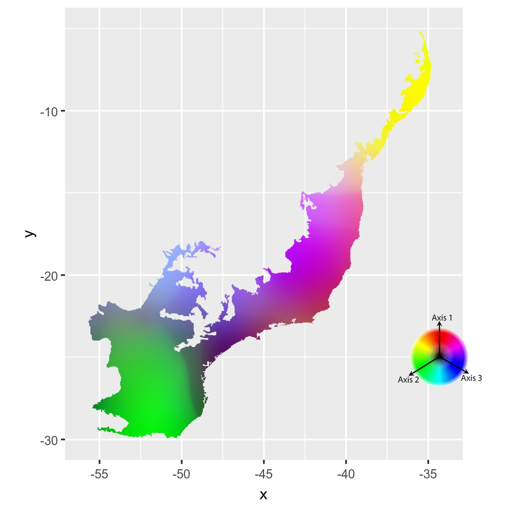
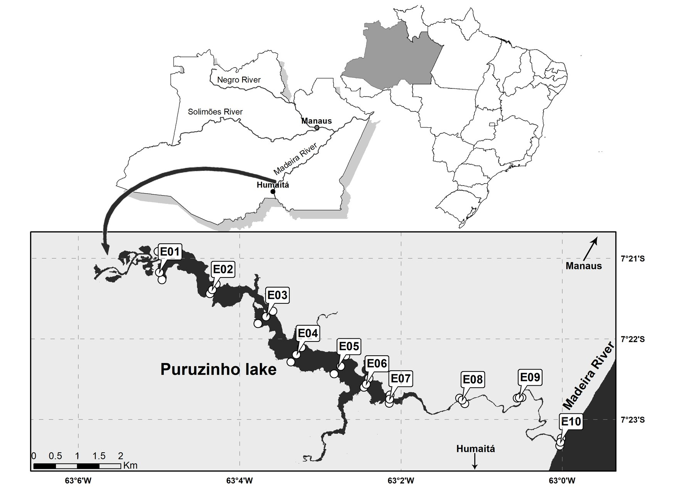

Portfolio · Philip Russo
Project atlas
I turn spatial and environmental data into decisions for the environmental and forestry sectors. Each plate is a case study with an interactive map.
Data scientist · GIS · PhD in Zoology (UFMG)
Bauru, SP, Brazil · remote, or hybrid in the region.
 1
Spider biogeography of the Americas: from literature data to diversity patterns
Americas · PhD thesis · 148k records
1
Spider biogeography of the Americas: from literature data to diversity patterns
Americas · PhD thesis · 148k records
 2
SPIDBASE: a relational database of spider records
MySQL · Darwin Core · 13 entities
2
SPIDBASE: a relational database of spider records
MySQL · Darwin Core · 13 entities
 3
Ceratium furcoides: global spread of an invasive microalga
World · MaxEnt · CMIP6 · 2 papers
3
Ceratium furcoides: global spread of an invasive microalga
World · MaxEnt · CMIP6 · 2 papers

4 Spiders of the Atlantic Forest: diversity and sampling bias Atlantic Forest · BioDinamica · GDM 5
Araneoidea of the Americas: 260 years of collecting on the map
Americas · MSc dissertation · 1757–2017
5
Araneoidea of the Americas: 260 years of collecting on the map
Americas · MSc dissertation · 1757–2017
 6
Scinax aff. machadoi: where to look for new populations
Quadrilátero Ferrífero · ANN · SVM · MaxEnt
6
Scinax aff. machadoi: where to look for new populations
Quadrilátero Ferrífero · ANN · SVM · MaxEnt
 7
Great-billed seed finch: eleven algorithms for a threatened bird with 22 records
Brazil · MaxEnt · openModeller
7
Great-billed seed finch: eleven algorithms for a threatened bird with 22 records
Brazil · MaxEnt · openModeller

8 Location maps: reservoirs and an Amazonian lake Brazil · ArcMap · Illustrator · on demand8 yearsof research at UFMG in biogeography and macroecology
148kspider records from the Americas organized in a relational database
34CMIP6 climate projections for an invasive species
6publications, thesis and dissertation with spatial analyses, from 2019 to 2025
Tools
Custom code for research bottlenecks. Closed source; demo on request.
Record miner
Extracts the examined material from taxonomic papers in PDF into validated tables, with locality inheritance and a log of errors in the papers themselves. As of October 2026, it has processed 80 papers and 3,263 records.
Python · PyMuPDFWorld Spider Catalog extractor
Crawls the catalog family by family and writes genera, species and taxonomic references to incremental CSVs.
Python · web scrapingArcGIS Pro → QGIS converter
Reads the internal structure of .aprx files and rebuilds the project in QGIS with symbology, map themes and print layouts. It converted the projects of plates 4 and 6, with 167 layers.
PyQGIS · GDALRegular grid generator
Square or hexagonal grids as Shapefiles, in WGS 84 and in a projected system, with geodesic area and a check against mixing up metres and degrees.
Python · pyprojPublications
- 2025[Authors, including Russo P]. SpiderATLAS: a database of spider traits and distributions in the Brazilian Atlantic Forest. Journal of Biogeography. [DOI]
- 2024Russo P. Spider biogeography of the Americas: from literature data to diversity patterns. PhD thesis, Graduate Program in Zoology, UFMG. plate 1 →
- 2021Macêdo RL, Franco ACS, Russo P, Collart T, Mammola S, Jeppesen E, Branco CWC, dos Santos LN, Rocha O. Climate and landscape changes enhance the global spread of a bloom-forming dinoflagellate related to fish kills and water quality deterioration. Ecological Indicators 133: 108408. doi ↗
- 2021Macêdo RL, Russo P, Corrêa RF, Rocha O, dos Santos LN, Branco CWC. The drifting dinoflagellate Ceratium furcoides (Levander) Langhans 1925: fundamental niche shift during global invasion. Hydrobiologia 848: 2105–2117. doi ↗
- 2019Russo P. Padrões biogeográficos e estruturação do conhecimento taxonômico das aranhas araneoideas americanas. MSc dissertation, Graduate Program in Zoology, UFMG. plate 5 →
- [year]Carvalho LS, Russo P, Brescovit AD, Oliveira-Tomasi M, Oliveira U, Santos AJ. The spider fauna of the Brazilian Atlantic Forest: effect of sampling bias on diversity patterns and conservation. Chapter in [book, publisher].
About
I am a biologist with an MSc and a PhD in Zoology from UFMG, and an MBA in Business Management. I spent about eight years at UFMG working on biogeography and macroecology, with biological and spatial databases and species distribution modelling.
Today I work as a freelancer on academic projects and environmental consulting, with data analysis and thematic maps.
- Tools
- Python, R, SQL, QGIS, ArcGIS Pro, MaxEnt, Dinamica EGO
- Languages
- Portuguese (native) · English (advanced) · Spanish (intermediate)
- Contact
- russo.bio@gmail.com · LinkedIn